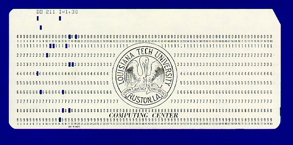
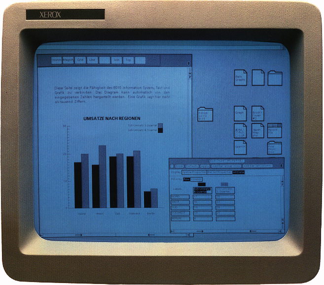

When computers first began to gain wide spread acceptance in the late 1950’s and early 1960’s very few people interacted directly with them. Even the people who wrote computer programs did not always have physical access to the “machine room” where the computer was maintained by the technicians and operators (Shown in ).
Bell Labs Holmdel, New Jersey computer center from 1973 – a leading edge computing center at the time
Programmers typed their programs and data on machines called keypunch machines. Keypunches were like typewriters, except that they punched holes in paper cards. Each punch card could hold up to 80 characters and represented one line of a program or data file. A punch card containing the FORTRAN statement:
DO 211 I=1,30
is illustrated in .
Once a programmer had punched a program, he or she would give it to an operator. Operators were the people who actually worked directly with the machine. The operator would take the punched cards and place them in a card reader. The card reader would quickly process a deck of cards, sensing where the holes had been punched and thereby “reading” the characters that had been punched on them.
An 80 column punch card
After the program had been “read in,” the computer (or Operator in the early days) would schedule the program to run when the needed resources became available. Following execution of the program, a listing of the program code together with its results would generally be printed on a line printer. Line printers were so named because of their ability to print an entire line (rather than a character) at a time.
As early as the 1960’s a few visionaries imagined how computers might one day be used for personal information organization and communication. In 1968, Douglas Engelbart, the inventor of the mouse, gave a presentation to an audience of 1,000 computer professionals at the Fall Joint Computer Conference that illustrated a number of then revolutionary concepts that decades later would become commonplace. His demo included: word processing, video conferencing, hypertext links, and online collaboration tools enabling two people working remotely to share a desktop and mouse pointer. The entire presentation was displayed to the audience using an overhead projector. This demonstration was so far ahead of its time and so prescient in nature that it has come to be known as “The Mother of All Demos”.[1] It would take decades for the kinds of applications Engelbart and his group envisioned to become practical as the cost of the hardware needed to support these apps was truly astronomical at the time.
As computers became more powerful they began to acquire the ability to handle the needs of multiple people, or users, at the same time. By the mid 1970’s, most computers were large mainframes that filled entire rooms and often cost millions of dollars. People interacted with these computers predominately through character-based terminals. Terminals combined a keyboard with a video display device and looked much like a personal computer does today. The difference was that the terminals of the mid 1970’s lacked the ability to do any “computing” on their own. They simply acted as input/output devices for the mainframe computer – allowing people to enter their programs and data on a keyboard, rather than a keypunch, and to see the results of their computations on a display screen, rather than printed on paper. The vast majority of these terminals were limited to displaying text. They were unable to display graphical images.
A mainframe of the mid to late 1970’s might have as many as 100 terminals attached to it. These terminals were often spread throughout an office, company, or college campus. Users communicated with the mainframe by issuing typed instructions called commands. Interfaces that supported the entry of typed commands were called command line interfaces. When first introduced, the command line interface was a major breakthrough. It allowed programmers to directly enter their programs and data into the computer, execute those programs, view the results, and make any needed corrections – all without the need for clunky keypunch machines, massive printers, and human operators. When personal computers began to emerge in the late 1970’s and early 1980’s, they too adopted the command line interface.
Despite its advantages, the command line was far from perfect. The names of the commands tended to be short and cryptic. For example, “ls” and “dir” are two common commands that request the computer to display the names of the user’s files – “ls” stands for “list” and “dir” stands for “directory.” To further complicate matters, most commands had a large number of options. These options were intended to increase the flexibility of the system. For example, the Unix command “ls -al” requests the computer to list all files in the current directory, including “hidden files,” and to display the amount of disk space each file takes up, the last date it was modified, and which groups of users have access to it. Remembering the names of all of the commands and their options could be quite difficult, especially for users who did not interact with the system on a daily basis.
In addition to the commands themselves, the command line interface required users to remember the names of files and the directories in which they were stored. For example, a Unix command for copying a file called “exam.docx” that is stored in the “fall13” subdirectory of the “CSC100” directory, to a file called “old_exam.docx” in the “fall14” subdirectory of “CSC100”, would look like the following:
cp CSC100/fall13/exam.docx CSC100/fall14/old_exam.docx
Entering such lengthy and cryptic commands was tedious and exacting. A single mistyped character could result in the computer doing something unexpected or generating an error – which at the very least would require the user to re-enter the (corrected) command.
While most everyone agreed that the command line interface had lots of issues, computer scientists were unsure how better interfaces could be developed. One popular approach was to have the computer system present a menu of choices. The user would select a choice by entering a number associated with the item. While these menus worked well for systems that had only a small number of choices (say no more than eight), they became unwieldy for larger numbers of commands. The standard response to this was to group “similar” commands together in submenus. Systems with many commands often required multiple levels of menus.
Menu selection, by its very nature, was less flexible than the command line. Many people found this hierarchy of menus too restrictive in complex programs such as operating systems. Experienced users found menus to be slow. It often took much longer to walk through the menus, submenus, and sub-submenus to select a command, compared to just typing it in. This was especially true on early mainframes, which could take several seconds to respond to a user’s request – due to the fact that they were serving several dozen users simultaneously. To make up for this lack of speed, the chief advantage of menus was supposed to be their ease of use. However, in large systems, even experienced users frequently found it difficult to quickly find the proper submenu that contained the command they wanted to execute.
Another approach taken by some computer scientists in the early 1970’s was to try to make commands less cryptic. Their goal was to construct a natural language (such as English) interface. While most everyone agreed that understanding spoken English was out of reach of the technology of the day, many thought that computers might soon be able to handle some form of typed English. These systems never caught on for a number of reasons. First, they never really developed to the point where anything approaching a real human language could be entered. Second, the subset of English recognized often “devolved” into just another command line interface, albeit one with lengthy command names that required a lot of typing. Finally, these interface programs required a lot of resources which slowed down the response time of already slow computer systems.
The approach that eventually replaced the command line interface was developed at the Xerox Palo Alto Research Center (PARC) in the 1970’s as part of the Alto computer project. The genius of the PARC approach, which built off the work of Douglas Engelbart and others, stemmed from the researchers’ recognition that in order for interfaces to become more useful they need to become simpler (from the user’s point of view) not more complex. PARC researchers also recognized that producing an intuitive interface might require a substantial fraction of a computer’s resources, but they were willing to pay this price in order for their Alto computers to be useful to non-computer specialists.
The researchers settled on the notion of representing the programs and data files that were stored in the computer as graphical images called icons. The computer screen was to be likened to a desktop on which these graphical icons could be placed. Programs could be run by selecting them with a pointing device, such as a mouse. Directories were to be represented by file folders that could be opened and closed by clicking on them. Files could be moved from one directory to another by “dragging” them from one open file folder to another.
In addition to the graphical user interface, the PARC researches also recognized that computers would be much more useful if networked together. Thus the Altos were connected together via an Ethernet, so that they could share documents and resources – including networked laser printers – and end-users could exchange email.
The interface paradigm developed by Xerox at PARC, which came to be known as the Graphical User Interface or GUI, eventually revolutionized computing, but it didn’t make any money for Xerox. Although Xerox did create a “commercial” version of the Alto in 1981, called the Star (shown in ), few were sold. People debate the reasons for this market failure, but certainly the high cost (approximately $20,000 per workstation), slow speed, and limited capabilities contributed to the lack of market acceptance. Regardless of the lack of market success, the Xerox Star is the first commercial computer that would look “familiar” to a present-day computer user.
the Xerox Star – circa 1981
A turning point in the computer industry occurred when Steve Jobs, co-founder of a small “personal computer” company called Apple, was shown what the PARC team had created. Jobs immediately recognized the promise of mouse-based graphical user interfaces and put his engineers to work building an affordable personal computer based on the ideas developed at PARC.
Apple’s first version of a computer based on PARC technology, Lisa, was a flop. However, Apple’s second attempt, the Macintosh, first released in 1984, was a major success. Because of their intuitive nature, GUI’s quickly became the human-computer interface of choice.
By the mid 1990’s every major operating system, such as Windows95, MacOS, OS/2, and the various flavors of Unix, included a graphical user interface. This method of interacting with a computer proved so popular that 20 years later it is still the dominant form of human-computer interface in desktop and laptop environments.
An early version of the public Internet began to become popular in the late 1990’s. During this period, end-users connected to the Internet and online services, such as AOL (America Online), using a modem and telephone. A modem was a device that allowed a computer to exchange digital information with another computer via audio tones transmitted over standard telephone lines. An end-user would dial the number of a computer system (or have the modem automatically do so). The computer being called would then ‘answer the phone’ and the two machines would exchange a series of tones to establish a connection. This process was called ‘hand shaking’ and was used to establish the speed with which data could be transferred between the two machines.
While access to the Internet was revolutionary for its time, the “Internet”, as it existed in the late 1990’s, would be barely recognizable compared to what we call the Internet today. There was no YouTube, Facebook, Google, Twitter, Netflix, Pandora, or Skype. In fact, many of these services couldn’t have existed before the turn of the century as the data transmission speeds supported by dial up modems were very slow compared to today’s broadband connections. How slow you ask? Well, a top-of-the-line dial up connection ran at around 56 Kbps (56,000 bits per second or about 7 Kbytes / sec) in the late 1990’s. As of August 2013, www.netindex.com estimated US average download speeds of 18.7 Mbps (2.3 Mbytes / sec) – over 300 times faster than in the late 1990’s. Because dial up connections were so slow, the web was mainly limited to text and lower resolution images. Streaming audio was of poor quality and considered ‘cutting edge’. Steaming video was simply not practical.
This situation began to change around the turn of the century as broadband Internet connections started to become widespread. In the early days of broadband (circa 2001) there was stiff competition between phone companies and cable companies for who would provide high speed Internet access. Eventually, cable companies with their cable modems prevailed over telephone companies with their DSL (Digital Subscriber Line) technology.
By the midpoint of the first decade of the 21st century, many households had multiple computers and computer-like devices, such as game machines, so it was only natural to want to allow these devices to communicate with each other and with the wider Internet. Additionally, the growing popularity of laptops over desktops meant that people didn’t want to have to plug their laptop into their cable/DSL modem in order to connect to the Internet. This situation led to the rapid adoption of wireless routers. Wireless routers establish LANs (Local Area Networks) which enable devices to connect to each other and the Internet using short range RF “radio frequency” transmitters and receivers.
Progressing in parallel with the rise of broadband Internet access and wireless Local Area Networks in the home, mobile communications were undergoing a sea change during the first decade of the 21st century. At the beginning of this period high-end professionals often carried around two separate devices: a PDA (Personal Digital Assistant) and a mobile phone. PDA’s were devices that served as digital appointment calendars and note taking devices, with a modest number of additional features like calculators and clocks. They were generally devoid of any type of wireless access to the Internet and supported only low resolution black and white LCD (Liquid Crystal Displays) displays. Most mobile phones (called “cell phones” in the US) generally supported voice calls and little else.
By the midpoint of the first decade of the 21st century mobile phones began supplanting PDA’s as the phones took on more and more of the features that had once been exclusive to PDA’s – appointment calendars, address books, calculator functions, etc. The screens on mobile phones still tended to be small, and relatively low resolution, though color was being introduced and resolutions were improving.
With the June 2007 introduction of the iPhone and October 2008 release of the first Android phones, people’s perceptions of mobile phones quickly morphed from primarily being devices for making telephone calls into “smart phones” – general purpose communication and computing devices that access the Internet over high speed mobile communication networks. Smart phones generally provide the functionality of: calendars, address books, clocks, calculators, portable music players, web browsers, digital cameras, video cameras, GPS navigation, email, photo albums, text messaging devices, and game machines. Oh, and they support making traditional phone calls too.
Apple’s iOS and Google’s Android smart phones also introduced the most substantial innovation in human computer interfaces since Xerox PARC developed the mouse driven graphical user interface in the 1970’s. These phones support the direct manipulation of onscreen objects using multi-touch gestures such as: swipe, tap, pinch, and reverse pinch. For example, in order to reduce the size of an image or zoom out on a map, simply “pinch” your thumb and forefinger together. To expand an image or zoom in on a map, do the opposite, “reverse pinch” by moving your thumb and forefinger apart. These gestures provide a much more intuitive and expressive interface between humans and computers than the point and click graphical user interface.
By midpoint of the second decade of the 21st century smart phones were ubiquitous and high speed Internet access was available throughout most of the US. Phone numbers became predominately associated with individuals rather than with locations. Fixed ‘land line’ phones continued to exist, but primarily in business settings as more and more households discontinued traditional land line service – many viewing such service as an overpriced relic of a bygone era. The coverage area of high speed mobile networks continued to improve, as did the bandwidth available to smart devices with the move from 3G to 4G and LTE. (Mobile broadband speeds tended to generally reside in the range of 2 Mbps to 10 Mbps as of mid 2013.)
With the release of Amazon’s Kindle in 2007 and Apple’s iPad in 2010 the popularity of E-book readers and tablets began to soar. In May of 2013 International Data Corporation (IDC) projected that by the end of 2013 worldwide shipments of tablets would overtake portable computers (e.g., laptops) and by 2015 overtake the entire PC market, desktops and portables combined.[2]
As late 2013, it seemed the computer industry was poised for a number of rapid changes in the ways humans interact with computers. Google’s Glass prototype, which implements an augmented reality interface, was already available to developers and a wide-scale consumer launch was promised for 2014. Voice based interfaces, for search and simple tasks like scheduling meetings were rapidly gaining popularity. Apple was rumored to be working on an ‘iWatch” type device. And even virtual reality gaming, which has been promised for decades, appeared to finally be gaining traction with the Oculus Rift – which raised $2.4 million through a Kickstarter campaign and then secured an additional $16 million in venture capital in June 2013.
Footnotes
[1] The complete demo – which runs 90 minutes in length is available online at: http://sloan.stanford.edu/MouseSite/1968Demo.html